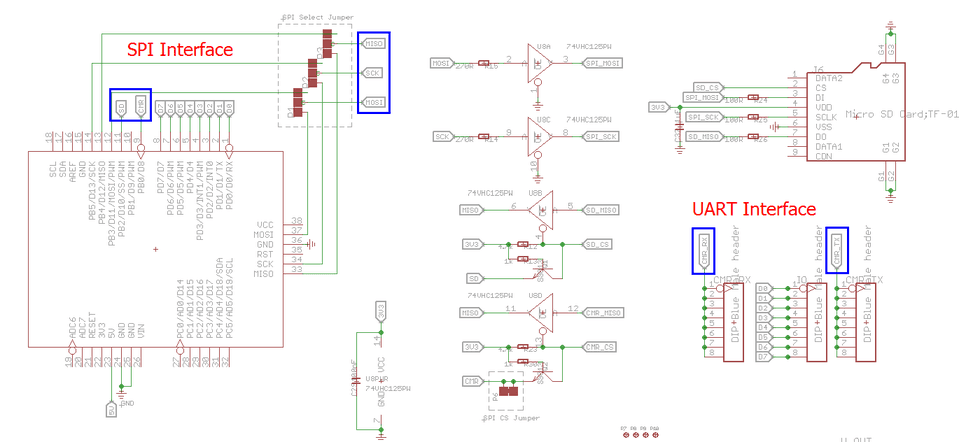
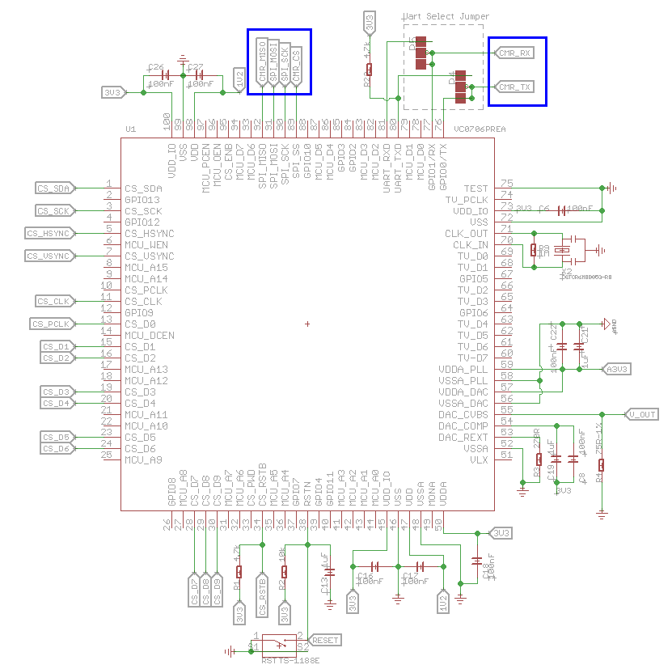

Camera Shield is the first shield board that support photograph, it is based on the solution of VC0706 + OV7725, the former is a high performance camera processor with enhanced image processing functions and it embedded the hard-wired JPEG codec, and the latter is a high-performance 1/4 inch, single-chip VGA camera and image processor in a small footprint package. We have written our library to control the Camera Shield via UART/SPI, which makes it possible to take picture easily by your Arduino board. Come on and use it to take a photo!
Camera Shield can be controlled via SPI or UART interface.


Here is a brief introduction to use Camera Shield.
1. Download the Camera Shield library file from gitHub and then extract the library file to your Arduino libraries folder.
2. Open the example folder in libraries/Camera_Shield_VC0706, you will find the snapshot example sketch, double click the snapshot.ino file to open it with arduino IDE.
3. We arrange the library to make it possible to control the Camera Shield via Software Serial/Hardware Serial/SPI, you can have your choice via modifying the code.
#include "SoftwareSerial.h"
#include <VC0706_UART.h>
#include <SD.h>
#include <SPI.h>
#define SS_SD 10
//use software serial
SoftwareSerial cameraconnection(2,3);//Rx, Tx
VC0706 cam = VC0706(&cameraconnection);
//use hardware serial
//VC0706 cam = VC0706(&Serial1);
void setup()
{
Serial.begin(9600);
Serial.println("VC0706 Camera Snapshot Test ...");
if (!SD.begin(SS_SD)) {
Serial.println("SD Card init failed...");
return;
}
if(true == cameraInit()){
snapShot();
}else{
Serial.println("camera init error...");
}
}
void loop()
{
//nothing to do
}
bool cameraInit()
{
cam.begin(BaudRate_19200);
char *reply = cam.getVersion();
if (reply == 0) {
Serial.println("Failed to get version");
return false;
} else {
Serial.println("version:");
Serial.println("-----------------");
Serial.println(reply);
Serial.println("-----------------");
return true;
}
}
void snapShot()
{
Serial.println("Snap in 3 secs...");
delay(3000);
if (! cam.takePicture()){
Serial.println("Failed to snap!");
}else {
Serial.println("Picture taken!");
}
// Create an image with the name IMAGExx.JPG
char filename[13];
strcpy(filename, "IMAGE00.JPG");
for (int i = 0; i < 100; i++) {
filename[5] = '0' + i/10;
filename[6] = '0' + i%10;
// create if does not exist, do not open existing, write, sync after write
if (! SD.exists(filename)) {
break;
}
}
// Open the file for writing
File imgFile = SD.open(filename, FILE_WRITE);
Serial.print("create ");
Serial.println(filename);
uint16_t jpglen = cam.getFrameLength();
Serial.print("wait to fetch ");
Serial.print(jpglen, DEC);
Serial.println(" byte image ...");
int32_t time = millis();
cam.getPicture(jpglen);
uint8_t *buffer;
while(jpglen != 0){
uint8_t bytesToRead = min(32, jpglen);
buffer = cam.readPicture(bytesToRead);
imgFile.write(buffer, bytesToRead);
//Serial.print("Read "); Serial.print(bytesToRead, DEC); Serial.println(" bytes");
jpglen -= bytesToRead;
}
imgFile.close();
time = millis() - time;
Serial.println("Done!");
Serial.print("Took "); Serial.print(time); Serial.println(" ms");
cam.resumeVideo();
}
use Hardware Serial or Software Serial for communication
we use Serial(Software Serial or Hardware serial) to communicate with Camera Shield, you can generate your applicance like below:
//use software serial SoftwareSerial cameraconnection(2,3);//Rx, Tx VC0706 cam = VC0706(&cameraconnection);
or if you want to use the hardware serial, you can do it like below:
//use hardware serial VC0706 cam = VC0706(&Serial1);
We use the software serial by default. If hardware serial is your choise, you need to modify the code in VC0706_UART head file. Change
#define USE_SOFTWARE_SERIAL 1
to
#define USE_SOFTWARE_SERIAL 0
Use UART or SPI for data transmission
Usually, you can take a picture by the following steps:
cam.takePicture(); uint16_t jpglen = cam.getFrameLength(); cam.getPicture(jpglen); buffer = cam.readPicture(bytesToRead);
and we allow you to read data via two mode:
You can choose your mode in VC0706_UART header file. We use the SPI mode by default.
#define TRANSFER_BY_SPI 1
change it to
#define TRANSFER_BY_SPI 0
to use the UART mode.
4. Stack the Camera Shield onto Arduino and Insert a mocro-SD card to the Camera Shield, you should pay attention to the serial jumpers that you defined in you code.
5. Compile the sketch and upload it to your arduino board. Open the Serial port of Arduino IDE, you can see the debug information shown from the Serial port. and the SD card status LED will blink quickly during the data transfer.
6. When the program finishes, pull out the SD card and insert it to your computer, you can see your photos. Have fun